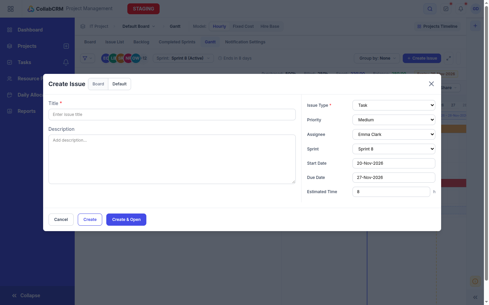
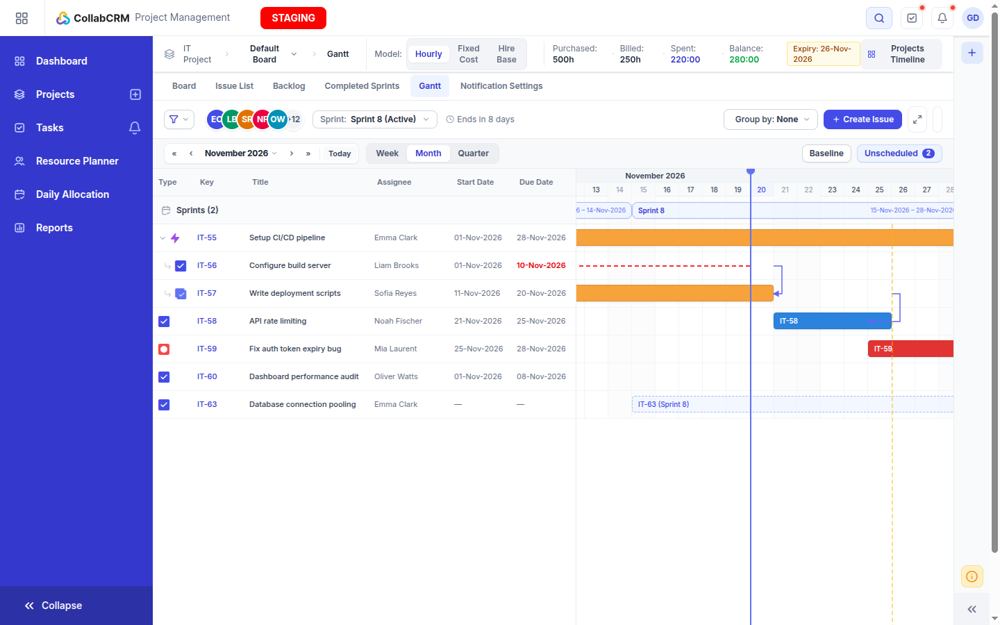
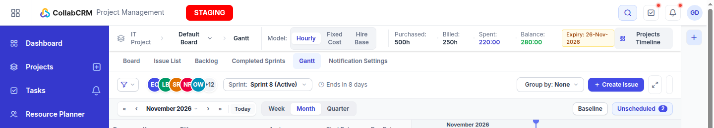
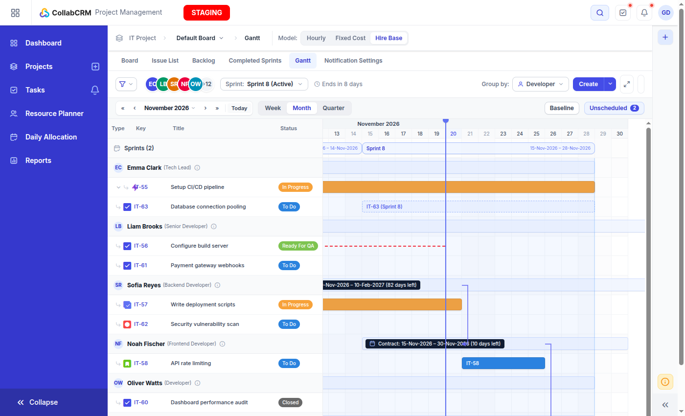
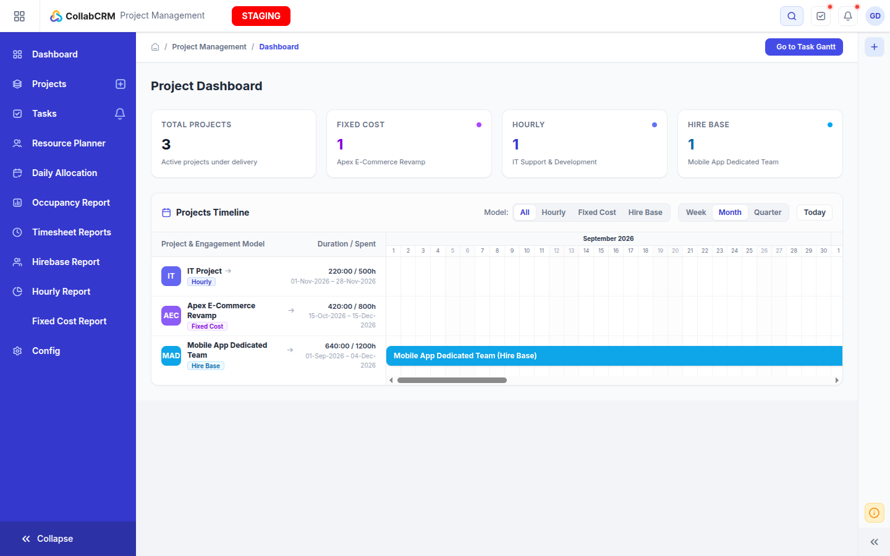

Read first
A Gantt is a calendar view of the board.
Each issue is a coloured bar from its Start Date to its Due Date. The team sees what happens when.
NEW = this part is to be built. Text without the tag already works in CollabCRM today.
Words used in these stories
14
| Term | Meaning |
|---|---|
| bar | one coloured strip per issue, from Start Date to Due Date. |
| today line | a line that marks the viewer’s local date. |
| past due | an open issue past its Due Date, shown with a red outline. |
| Epic summary bar | one bar that spans all the children of an Epic. |
| Sub-Task row | a child issue shown under its parent. |
| dependency line | a line that joins two linked issues. |
| baseline | the saved first plan shown under today’s bars. |
| Unscheduled list | issues that have no Start Date or sprint. |
| Group by | a filter that gathers rows under a chosen heading. |
| Quarter view | a zoom that shows three months at once. |
| Hire Base | a project billed by developers and contract dates. |
Common rules
Read these once. The stories do not repeat them.
| Rule | What it means |
|---|---|
| Access | To read the Gantt: Task management → View. To change dates, link issues, save a baseline: Task management → Edit (Project Management → Config → Access Levels). |
| Where it lives | Side Navigation bar → Tasks → <project> → Board → Gantt. Or Projects → <project> → Task Boards → View Task Board → Gantt. Every story starts here unless it says otherwise. The user is logged in with a registered Email ID and Password. |
| NEW One toolbar | All Gantt controls sit in one toolbar, left to right: Sprint, Group by, Type | Week, Month, Quarter, Today | Baseline, Unscheduled. Active filters show as chips with one “Clear all”. |
| Bar colour | The bar takes the colour of its status column on the board: To Do #2B83DE, In Progress #F7A23A, In Review #E23333, Ready For QA #7EC451, Closed #696969. |
| NEW One hover card | Point at any bar to see: status, Start Date, Due Date, Logged Time against Estimated Time, and the saved baseline dates when the baseline is on. |
| Date changes | Every Start Date or Due Date change (form, panel, drag, drop) adds a History entry: “<user name> updated Start Date to <date>”. Watchers are told through “Other changes (title, description, priority, etc.)” in Notification Settings. |
| NEW Undo | After a drag or drop, a toast says “Dates updated” with an Undo link for 10 seconds. |
| Dates | Calendar days, DD-MMM-YYYY. “Today” is the viewer’s local date. Start Date must be on or before Due Date, or nothing is saved. Messages: “Start Date should be on or before Due Date.” and “Due Date should be on or after Start Date.” |
| Large boards | Epics start collapsed. Rows load as the user scrolls. |
Add a Start Date to an issue
Business Scenario: A client requests a major deliverable — "Payment Gateway Integration" — targeted for release on 20-Nov, requiring an estimated 4 working days of development effort.
Current Limitation: In current CollabCRM, issues only have a Due Date (20-Nov). Without an explicit start date, developers frequently begin work on the 19th or 20th, inevitably causing delivery deadline slips.
Solution & Workflow: When creating the issue in the Create Issue modal, the Project Manager selects both Start Date (17-Nov) and Due Date (20-Nov). Both the developer and PM have an unambiguous schedule commitment that development must commence on the 17th.
Business Value: Establishes clear delivery accountability, prevents last-minute project crunches, and enables precise bar placement on the Gantt timeline.

Acceptance Criteria
6
- Go to Side Navigation bar → Tasks → <project> → Issue List. Click “Create Issue”.
- NEW The pop-up screen shows Start Date and Due Date side by side, under Sprint. The other fields stay as today:TitleDescriptionAssigneeReporterIssue TypePrioritySprintEstimated Time
- Enter the Title. Pick the Issue Type:EpicStoryTaskBug
- Pick a Start Date and a Due Date. Click “Create”.
- NEW Open the issue. The right-side panel shows Start Date next to Due Date.
- NEW Click Start Date in the panel and pick a new day. It saves at once and the History tab logs it.
Field Values
2
| Field | Type | Required | Format | Error message |
|---|---|---|---|---|
| Start Date | Date | Optional | Date picker, placeholder “Select Date”, DD-MMM-YYYY, for example 30-Nov-2026. | NEW “Start Date should be on or before Due Date.” |
| Due Date | Date | Optional | Same picker and format. | NEW “Due Date should be on or after Start Date.” |
Validations
3
- Start Date must be on or before Due Date. If not, the issue is not saved.
- Start Date can stay blank. With no Start Date and no sprint, the issue goes to the Unscheduled list.
- Every change is logged and watchers are told (see Common rules).
Read the plan on the Gantt
Business Scenario: An active sprint contains 40 concurrent issues, and client stakeholders inquire: "What is our progress today, and what specific deliverables will complete next week?"
Current Limitation: Kanban boards show cards segregated into vertical status columns. Mentally synthesizing chronological progress, delivery sequences, and upcoming handoffs requires tedious manual inspection.
Solution & Workflow: The PM navigates to the Gantt tab. Each task renders as a continuous horizontal bar spanning its Start and Due dates. A vertical blue Today Line indicates expected completion progress against the current calendar day. Hovering over any task displays real-time logged vs estimated hours, assignee, and dates.
Business Value: Delivers instant operational transparency during daily standups and eliminates manual progress inquiries.

Acceptance Criteria
9
- Open the task board. It has these tabs:BoardIssue ListBacklogCompleted SprintsNEW GanttNotification Settings
- NEW Click “Gantt”. To maximize horizontal timeline canvas space, the left grid shows:Type iconKeyTitleStatusAssignee, Start Date, and Due Date are visualized directly on the schedule canvas and available on issue bar hover/modal.
- NEW Each issue is one bar from Start Date to Due Date. The today line marks the viewer’s local date.
- NEW An open issue past its Due Date gets a red outline. A dashed part reaches the today line.
- NEW Use “Add Child” on a parent. Sub-Task rows sit under it with a collapse arrow. An Epic gets one summary bar over its children.
- Click any row to open that issue’s panel.
- NEW Narrow the chart from the toolbar. Filters combine:SprintGroup by: None, Epic, Story, TaskType: Epic, Story, Task, Bug
- NEW Pick Week, Month or Quarter. Click “Today” to jump back to the today line.
- NEW Weekends are shaded grey. Company holidays are shaded too (People → Config → Master Data → Holidays).
Field Values
5
| Field | Type | Required | Format | Error message |
|---|---|---|---|---|
| Sprint | Dropdown | Optional | None, Backlog, and every sprint including completed ones. | — |
| Group by | Dropdown | Optional | None, Epic, Story, Task. | — |
| Type | Dropdown | Optional | Epic, Story, Task, Bug. | — |
| Time zoom | Button group | Optional | Week, Month, Quarter. Reuses the control on Daily Allocation. | — |
| Today | Action | Optional | Jumps to the viewer’s local date. | — |
Validations
6
- Bar colour follows the status column (see Common rules).
- An empty board shows the project dates and sprints. The existing “Create” button adds the first issue.
- Filters change what is shown. Issue data stays the same.
- The today line and past-due outline stay visible in every zoom.
- Each bar date change is saved in the issue History tab.
- Large boards: epics start collapsed and rows load on scroll.
View project hours and sprints on top
Business Scenario: The organization manages projects across distinct commercial engagement models — Fixed Cost, Hourly Bucket, and Hire Base.
Current Limitation: Project managers must navigate away to separate financial reports to check budget status while planning sprint activities.
Solution & Workflow: The toolbar KPI section dynamically adapts to the project's commercial model via compact dropdown pills:
• Hourly: Displays a compact [ Balance: 280h ▾ ] pill in the toolbar. Clicking or hovering reveals the full financial breakdown: Purchased (500h), Billed (250h), Spent (220h), Balance (280h), and Contract Expiry Date (26-Nov-2026).
• Fixed Cost: Displays a compact [ Spent: 210h / 500h ▾ ] pill revealing Estimated (500h), Top-Up (50h), and Spent (210h).
• Hire Base: Displays contract overview in the toolbar with individual contracted developer spans tracked on respective timeline rows.
Business Value: Keeps commercial budget health directly visible alongside sprint scheduling, preventing unbilled team overruns.

Acceptance Criteria
5
- Open the Gantt tab on any project board.
- NEW Directly on the Row 2 toolbar, compact financial KPI dropdown pills adapt dynamically to the project's Engagement Model without overcrowding view controls: Hourly: Balance pill revealing Purchased, Billed, Spent, Balance, and Contract Expiry Date; Fixed Cost: Spent/Estimated pill revealing Top-Up and spend progress; Hire Base: Active contract overview pill. All hour values use standardized "h" notation without timer colons.
- NEW Pinned below the hours strip, the Sprint Header Row displays the active sprint name, date boundaries, and remaining time span.
- Both the Hours strip and the Sprint header row remain permanently pinned at the top while issue rows scroll vertically underneath.
- If an Hourly project's balance falls below 10% or contract expiry approaches within 7 days, an amber alert badge is displayed.
Field Values
2
| Field | Type | Required | Format | Error message |
|---|---|---|---|---|
| Project Hours Strip | KPI Bar | Read-only | Purchased, Billed, Spent, Balance, Expiry (Hourly) or Estimated/Spent (Fixed Cost) or Contract Dates (Hire Base). | — |
| Sprint Header Row | Timeline Row | Read-only | Active sprint name, start date, end date, and duration span. | — |
Validations
4
- The KPI header changes automatically based on the project's Engagement Model (Hourly, Fixed Cost, Hire Base).
- The Expiry Date line and warning alerts show for Hourly projects based on project contract details.
- Sprint header row reads dates and duration directly from the project's Backlog records.
- The header KPI strip and sprint bar stay pinned at the top during vertical scrolling of the task grid.
Change dates from the Gantt
Business Scenario: A client requests a schedule shift: "Postpone campaign deliverables by 3 days and shift the final completion deadline accordingly."
Current Limitation: The PM must open 10 individual task details, manually edit both Start and Due dates in forms, and save each one — requiring dozens of repetitive interactions.
Solution & Workflow: On the Gantt chart, the PM drags an existing task bar to reschedule both dates in a single motion. Dragging a bar edge expands or contracts duration. Releasing does not open the details panel, and a 10s Undo toast allows instant reversion.
• Dedicated "+ Add Task" Line: Each scheduled task occupies its own dedicated horizontal line. To prevent clutter, a subtle greyed-out "+ Add Task" line sits below the task rows (and under each developer group). Hovering over any date cell displays a circular handle with a "Click or drag to Create Task" tooltip. Clicking or dragging across dates opens the Create Issue modal with Start Date and Due Date pre-filled to that range (and Assignee pre-filled if under a developer).
• Unscheduled Drawer: Undated backlog tasks can be scheduled by setting dates or dragging directly onto the calendar.
Business Value: Reduces sprint rescheduling time from 20 minutes to seconds while preserving an exact audit history.

Acceptance Criteria
10
- NEW Drag the body of a task bar. Start Date and Due Date move by the same number of days.
- NEW Drag the left edge to change Start Date. Drag the right edge to change Due Date.
- Release the bar. Both dates save immediately and an Undo toast appears for 10 seconds. Releasing does not open the details panel.
- NEW Each scheduled task occupies its own dedicated horizontal line. Existing task lines do not allow overlapping task creation.
- NEW A subtle, greyed-out "+ Add Task" row is displayed below tasks and developer groups.
- NEW Hovering over any date cell of the "+ Add Task" row reveals a circular handle with a "Click or drag to Create Task" tooltip.
- NEW Clicking a date on the "+ Add Task" row opens Create Issue modal with that date pre-filled as Start Date and Due Date.
- NEW Dragging across dates on the "+ Add Task" row shows a dashed preview bar and opens Create Issue modal with Start Date and Due Date pre-filled to that range. Upon saving, the new task is appended to the bottom of the group immediately above the "+ Add Task" row.
- NEW Click “Unscheduled” in the toolbar to open the drawer; drag an undated issue onto the calendar or set dates directly.
- A teammate with View access opens the same Gantt and sees the updated dates. Drag handles stay hidden for View access.
Field Values
3
| Field | Type | Required | Format | Error message |
|---|---|---|---|---|
| Start Date | Date | Optional | Calendar days, DD-MMM-YYYY. Set by the drop position. | NEW “Start Date should be on or before Due Date.” |
| Due Date | Date | Optional | Calendar days, DD-MMM-YYYY. Set by the drop position. | NEW “Due Date should be on or after Start Date.” |
| Search | Alphanumeric | Optional | Matches Key or Title in the Unscheduled list. | — |
Validations
6
- Edit access can drag. View access reads the chart.
- Two people editing the same bar: both entries stay in History. The latest save shows on refresh.
- No dates and no sprint: the issue stays in the Unscheduled list.
- No dates but a sprint: a light bar spans the sprint.
- Due Date and Estimate but no Start Date: a dashed bar ends on the Due Date. Its length is 8 hours to 1 working day.
- The Unscheduled list stays searchable on large boards (for example 765 Backlog and 724 To Do issues).
Link issues and compare with a baseline
Business Scenario: A client agreement establishes a committed committed delivery deadline of 30-Nov.
Current Limitation: When task delays occur mid-sprint, dates are overwritten directly. At project sign-off, management lacks verifiable evidence comparing the initial contractual baseline against subsequent revisions.
Solution & Workflow:
• Multi-Baseline Snapshots (ClickUp Architecture): Clicking "Baselines" opens a dedicated side drawer managing all project plan versions (e.g. Baseline 1, Baseline 2).
• New Baseline on Every Save: Each time a PM saves a baseline, a new immutable snapshot is generated with a unique color swatch (e.g. Purple for Baseline 1, Emerald Green for Baseline 2). Old baselines are preserved rather than overwritten.
• Independent Visibility Toggles: Each baseline in the drawer features an independent toggle switch, allowing PMs to compare any combination of historical baselines simultaneously.
• Stacked Multi-Baseline Bars: On the Gantt canvas, each active baseline renders as a distinct dashed band beneath scheduled tasks in its assigned color.
• Hover Card Variance Tracking: Hovering over any task bar displays all active baselines with planned completion dates and precise delay slips (e.g. Baseline 1: 14-Nov (+6d slip) | Baseline 2: 18-Nov (+2d slip)).
• Dependency Links: Dependent issues are visually linked (Finish-to-Start). If a blocker task slips past the start date of a successor, the connector line highlights in red to flag a scheduling conflict.
Business Value: Delivers incontrovertible audit documentation for client governance and protects agency contractual scope.

Acceptance Criteria
7
- Go to Tasks → <project> → Issue List → <issue key> → Link Issue. Pick “Blocks” or “Is Blocked By”, pick the target issue, click “Link”. NEW History logs user name, link type and linked issue key.
- NEW Open the Gantt. A dependency line joins linked issues:
- Finish-to-start: ends at the blocked issue’s Start Date
- Start-to-start: joins two Start Dates
- Finish-to-finish: joins two Due Dates
- NEW If a blocked issue starts before its blocker ends, the line turns red and the bar flags the scheduling conflict.
- NEW Click “Baselines” on the toolbar to open the Baselines side drawer. Click “+ New Baseline” to capture current task dates into a new named snapshot (e.g. “Baseline 1”, “Baseline 2”).
- NEW Each saved baseline is assigned a distinct color (Purple, Emerald, Sky Blue, Amber) with its own toggle switch in the drawer. Toggling ON displays its dashed baseline band beneath task bars on the Gantt canvas.
- NEW When tasks slip or dates move, dashed baseline bars stay anchored at their snapshot dates, allowing simultaneous visual comparison of multiple plan revisions.
- NEW Hovering over any task bar displays planned dates and delay slips across all enabled baselines (e.g. “Baseline 1: 14-Nov (+6d) | Baseline 2: 18-Nov (+2d)”).
Field Values
2
| Field | Type | Required | Format | Error message |
|---|---|---|---|---|
| Link relationship | Dropdown | Optional | Is Blocked By, Blocks, Is Cloned By, Is Duplicated By, Duplicates, Related To. NEW On the Gantt: start-to-start and finish-to-finish. | — |
| Baseline name | Alphanumeric | Mandatory | Free text, for example Agreed plan. | NEW “Baseline name is required.” |
Validations
4
- Existing link types are kept. Linked issues still show under Linked Issues on the panel.
- Deleting an issue removes it and its lines from the chart.
- The baseline keeps the first saved dates even after bars move: a faint grey bar stays stuck at the original dates under the moved bar and the hover card shows planned vs actual dates with delay in days.
- Saving a baseline adds no History entry and leaves work logs untouched.
Plan people on a Hire Base project
Business Scenario: A client retains dedicated developers (e.g., Liam Brooks and Sofia Reyes) on a monthly Hire Base contract ending on 28-Nov.
Current Limitation: Delivery heads must check separate contract documents to verify individual developer engagement spans while reviewing task progress.
Solution & Workflow:
• Toolbar Team Contracts Pill: A compact [ 👥 Team Contracts (4) ▾ ] dropdown pill in the toolbar lets managers inspect all active contracted engineers, dates, and days left in 1-click — regardless of whether the Gantt is grouped by Epic, Story, Task, Developer, or None.
• Developer Contract Bands: Grouping by developer displays horizontal contract duration bands directly on each developer's header row (e.g. Contract: 01-Nov – 28-Nov · 8 days left) without overlapping task bars. Left table developer rows include subtle ⓘ tooltip icons for full contract spans.
• Dedicated Child Task Rows: Tasks assigned to each developer appear as dedicated child rows beneath their header row.
• Task Bar Hover Card Contract Tracking: Hovering over any task bar displays the assigned engineer's contract span (e.g. Contract till 28-Nov); if a task's Due Date exceeds the contract end date, an amber indicator flags ⚠️ Due date exceeds contract.
• Dedicated "+ Add Task" Line: Each developer group includes a subtle, greyed-out "+ Add Task" line to schedule new tasks pre-assigned to that engineer.
Business Value: Enforces dedicated developer contractual commitments and prevents client billing disputes.

Acceptance Criteria
5
- Go to Projects → <project> → Resources. Read each developer’s contract Start Date and End Date.
- NEW Open the Gantt. It opens grouped by developer (Assignee), one header row per person.
- NEW Contract bands span each developer’s contract dates directly on the header row, showing contract dates and remaining days.
- NEW Tasks assigned to each developer appear on individual child rows beneath the developer header.
- NEW Click or drag on the developer's "+ Add Task" row to create and schedule a new task pre-assigned to that developer.
Field Values
4
| Field | Type | Required | Format | Error message |
|---|---|---|---|---|
| Assignee | Dropdown | Mandatory | Project resources: Developer, Designer, Quality Analyst (QA). | — |
| Contract Start Date | Date | Optional | DD-MMM-YYYY, for example 01-Sep-2026. | — |
| Contract End Date | Date | Optional | DD-MMM-YYYY, for example 04-Dec-2026. | — |
| Remaining Days | Number (calculated) | Display field | Whole days left on the contract, for example 15. | — |
Validations
4
- Contract duration bands render directly on developer header rows without overlapping task bars.
- Remaining Days comes from the hire contract record.
- Grouping by developer uses the Assignee field on the board.
- Tasks outside contract dates highlight with contract boundary indicators.
Projects Timeline on Dashboard
Business Scenario: Delivery Heads and Executive Management need an overall status overview across 15 concurrent company projects during portfolio review meetings.
Current Limitation: Reviewing multiple projects requires navigating into individual project boards separately, consuming hours without generating a unified executive roadmap.
Solution & Workflow:
• Projects Timeline (Dashboard): Navigating to Dashboard opens the consolidated Projects Timeline, displaying all active company engagements (Fixed Cost, Hourly, Hire Base) on a single portfolio calendar with 1-click drill-down into individual project boards.
Business Value: Gives leadership an instant strategic overview of company-wide project delivery status and organizational capacity.

Acceptance Criteria
4
- NEW Go to Side Navigation bar → Dashboard. Read “Total Projects” and “Projects by Engagement Model & Status”. Open the Projects Timeline:Fixed CostHourlyHire Base
- NEW Each project appears as a row with its active duration marked across commercial models. Start Date and End Date form calendar duration bands.
- NEW Time zoom controls (Week, Month, Quarter, and Today) navigate and zoom across all company projects simultaneously.
- Click any project row to navigate directly to that project’s dedicated Gantt board.
Field Values
2
| Field | Type | Required | Format | Error message |
|---|---|---|---|---|
| Project | Dropdown / Row | Optional | Active company projects (name, Engagement Model, and date range). | — |
| Time zoom | Button group | Optional | Week, Month, Quarter, Today. | — |
Validations
3
- The Projects Timeline reads dates directly from project records across all engagement models (Fixed Cost, Hourly, Hire Base).
- Each project bar reflects the active project start and target end dates.
- Clicking a project opens that project’s primary task board Gantt view.